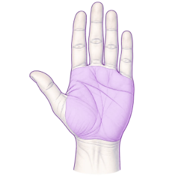
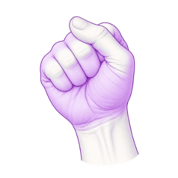
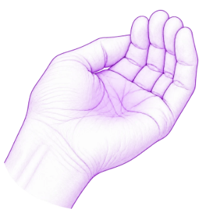
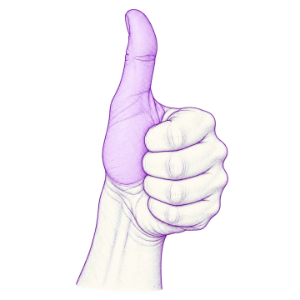

Čtyři míry, které máte „po ruce“.

Dlaň
Bílkoviny
Porce odpovídá přibližně ploše a tloušťce dlaně bez prstů.
maso, ryby, tofu, řecký jogurt, cottage

Pěst
Zelenina
Objem sevřené pěsti slouží jako orientační míra porce neškrobové zeleniny.
brokolice, paprika, cuketa, květák

Hrst
Sacharidy
Miska vytvořená z dlaně = orientační porce obilovin, luštěnin, brambor nebo ovoce.
rýže, brambory, těstoviny, hlízy

Palec
Tuky
Objem celého palce od kořene ke špičce.
olej, ořechy, semena, ořechové máslo, avokádo